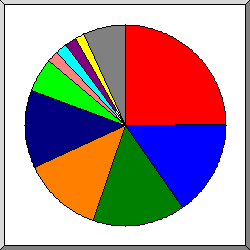
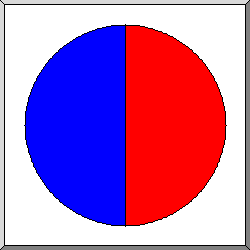
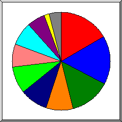
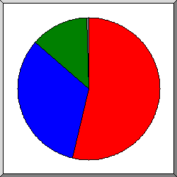
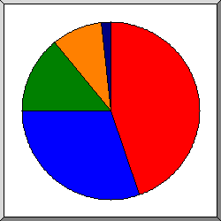
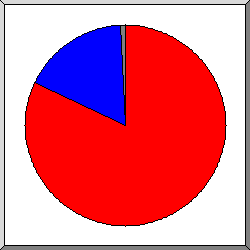
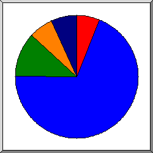
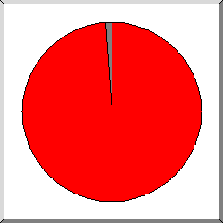
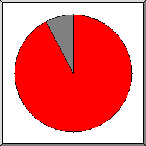

Статистика обращений к greenbro.net
Статистика обращений к greenbro.net
Программа стартовала в ср. 30 янв 2019 17:47.
Анализ обращений к серверу с вт. 4 дек 2018 01:41 по ср. 30 янв 2019 17:19 (57,65 дней).
Статистика обращений к greenbro.netПрограмма стартовала в ср. 30 янв 2019 17:47.
Анализ обращений к серверу с вт. 4 дек 2018 01:41 по ср. 30 янв 2019 17:19 (57,65 дней).
(Переход: Вверх | Основная Информация | Статистика по месяцам | Статистика по дням недели | Статистика по времени суток | Статистика по доменам | Статистика по организациям | Статистика по ссылающимся сайтам | Статистика по браузерам (подробная) | Статистика по браузерам (суммарная) | Статистика по операционным системам | Статистика по коду возврата | Статистика по размерам файлов | Статистика по типам файлов | Статистика по директориям | Статистика по запросам)
Запись в круглых скобках - данные за 7 дней до 30 янв 2019 17:47.
Успешных обращений: 121 (16)
Среднее кол. успешных обращений в день: 2 (2)
Успешных обращений к страницам: 118 (16)
Среднее кол. успешных обращений к страницам в день: 2 (2)
Неуспешных запросов: 14 (0)
Перенаправленных запросов: 3 (0)
Количество запрошенных файлов: 6 (11)
Количество обслуженных хостов: 47 (55)
Данных передано: 59,60 килобайт (5,37 килобайт)
Среднее кол. переданных данных в день: 1,03 килобайт (786 байт)
(Переход: Вверх | Основная Информация | Статистика по месяцам | Статистика по дням недели | Статистика по времени суток | Статистика по доменам | Статистика по организациям | Статистика по ссылающимся сайтам | Статистика по браузерам (подробная) | Статистика по браузерам (суммарная) | Статистика по операционным системам | Статистика по коду возврата | Статистика по размерам файлов | Статистика по типам файлов | Статистика по директориям | Статистика по запросам)
Каждый символ ( ) отображает 2 обращений к страницам или около этого.
) отображает 2 обращений к страницам или около этого.
| месяц | запросы | страниц | |
|---|---|---|---|
| дек 2018 | 69 | 69 |   |
| янв 2019 | 52 | 49 |   |
Наибольшее количество обращений в дек 2018 (69 обращений к страницам).
(Переход: Вверх | Основная Информация | Статистика по месяцам | Статистика по дням недели | Статистика по времени суток | Статистика по доменам | Статистика по организациям | Статистика по ссылающимся сайтам | Статистика по браузерам (подробная) | Статистика по браузерам (суммарная) | Статистика по операционным системам | Статистика по коду возврата | Статистика по размерам файлов | Статистика по типам файлов | Статистика по директориям | Статистика по запросам)
Каждый символ () отображает 1 обращение к странице.
| день | запросы | страниц | |
|---|---|---|---|
| вс. | 6 | 5 |  |
| пн. | 14 | 14 | |
| вт. | 8 | 8 | |
| ср. | 22 | 22 | |
| чт. | 37 | 37 | |
| пт. | 20 | 20 | |
| сб. | 14 | 12 | |
(Переход: Вверх | Основная Информация | Статистика по месяцам | Статистика по дням недели | Статистика по времени суток | Статистика по доменам | Статистика по организациям | Статистика по ссылающимся сайтам | Статистика по браузерам (подробная) | Статистика по браузерам (суммарная) | Статистика по операционным системам | Статистика по коду возврата | Статистика по размерам файлов | Статистика по типам файлов | Статистика по директориям | Статистика по запросам)
Каждый символ () отображает 1 обращение к странице.
| час | запросы | страниц | |
|---|---|---|---|
| 0 | 2 | 2 | |
| 1 | 3 | 3 | |
| 2 | 4 | 3 | |
| 3 | 4 | 4 | |
| 4 | 7 | 7 | |
| 5 | 6 | 6 | |
| 6 | 11 | 11 | |
| 7 | 8 | 8 | |
| 8 | 5 | 5 | |
| 9 | 4 | 3 | |
| 10 | 7 | 6 | |
| 11 | 3 | 3 | |
| 12 | 4 | 4 | |
| 13 | 8 | 8 | |
| 14 | 7 | 7 | |
| 15 | 1 | 1 | |
| 16 | 6 | 6 | |
| 17 | 2 | 2 | |
| 18 | 4 | 4 | |
| 19 | 4 | 4 | |
| 20 | 8 | 8 | |
| 21 | 8 | 8 | |
| 22 | 4 | 4 | |
| 23 | 1 | 1 | |
(Переход: Вверх | Основная Информация | Статистика по месяцам | Статистика по дням недели | Статистика по времени суток | Статистика по доменам | Статистика по организациям | Статистика по ссылающимся сайтам | Статистика по браузерам (подробная) | Статистика по браузерам (суммарная) | Статистика по операционным системам | Статистика по коду возврата | Статистика по размерам файлов | Статистика по типам файлов | Статистика по директориям | Статистика по запросам)
Список доменов, отсортировано по суммарному трафику.
| запросы | %байт | домен |
|---|---|---|
| 121 | 100% | [нераспознанный IP-адрес] |
(Переход: Вверх | Основная Информация | Статистика по месяцам | Статистика по дням недели | Статистика по времени суток | Статистика по доменам | Статистика по организациям | Статистика по ссылающимся сайтам | Статистика по браузерам (подробная) | Статистика по браузерам (суммарная) | Статистика по операционным системам | Статистика по коду возврата | Статистика по размерам файлов | Статистика по типам файлов | Статистика по директориям | Статистика по запросам)

Поделено на сектора по количеству обращений.
 137.226
137.226
 13
13
 54
54
 138.246
138.246
 60
60
 5
5
 151.80
151.80
 209.17
209.17
 107
107
 172.104
172.104
 другое
другое
Список организаций, отсортировано по количеству обращений.
| запросы | %байт | организация |
|---|---|---|
| 42 | 24,57% | 137.226 |
| 18 | 10,61% | 13 |
| 15 | 12,63% | 54 |
| 8 | 138.246 | |
| 7 | 18,11% | 60 |
| 6 | 4,19% | 5 |
| 4 | 2,79% | 151.80 |
| 4 | 3,51% | 209.17 |
| 3 | 1,54% | 107 |
| 3 | 13,85% | 172.104 |
| 2 | 165.227 | |
| 2 | 1,40% | 198.143 |
| 2 | 1,40% | 46 |
| 1 | 0,73% | 71 |
| 1 | 0,42% | 74 |
| 1 | 0,70% | 96 |
| 1 | 1,78% | 66.240 |
| 1 | 1,78% | 81.173 |
(Переход: Вверх | Основная Информация | Статистика по месяцам | Статистика по дням недели | Статистика по времени суток | Статистика по доменам | Статистика по организациям | Статистика по ссылающимся сайтам | Статистика по браузерам (подробная) | Статистика по браузерам (суммарная) | Статистика по операционным системам | Статистика по коду возврата | Статистика по размерам файлов | Статистика по типам файлов | Статистика по директориям | Статистика по запросам)

Поделено на сектора по количеству обращений.
https://greenbro.net/
https://www.greenbro.net/
Список ссылающихся сайтов, отсортировано по количеству обращений.
| запросы | сайт |
|---|---|
| 1 | https://greenbro.net/ |
| 1 | https://www.greenbro.net/ |
(Переход: Вверх | Основная Информация | Статистика по месяцам | Статистика по дням недели | Статистика по времени суток | Статистика по доменам | Статистика по организациям | Статистика по ссылающимся сайтам | Статистика по браузерам (подробная) | Статистика по браузерам (суммарная) | Статистика по операционным системам | Статистика по коду возврата | Статистика по размерам файлов | Статистика по типам файлов | Статистика по директориям | Статистика по запросам)

Поделено на сектора по количеству обращений к странице.
Mozilla/5.0 (compatible; AhrefsBot/5.2; +http://ahrefs.com/robot/)
Mozilla/5.0 (Macintosh; Intel Mac OS X 10_12_6) AppleWebKit/537.36 (KHTML, like Gecko) Chrome/61.0.3163.100 Safari/537.36
Mozilla/5.0 zgrab/0.x (compatible; Researchscan/t12sns; +http://researchscan.comsys.rwth-aachen.de)
Mozilla/5.0 zgrab/0.x (compatible; Researchscan/t13rl; +http://researchscan.comsys.rwth-aachen.de)
Mozilla/5.0 zgrab/0.x (compatible; Researchscan/t12ca; +http://researchscan.comsys.rwth-aachen.de)
Mozilla/5.0 (Windows NT 6.1; Win64; x64) AppleWebKit/537.36 (KHTML, like Gecko) Chrome/40.0.2214.85 Safari/537.36
Mozilla/5.0 (Windows NT 10.0; WOW64) AppleWebKit/537.36 (KHTML, like Gecko) Chrome/66.0.3359.117 Safari/537.36
Mozilla/5.0 (Macintosh; Intel Mac OS X 10.11; rv:47.0) Gecko/20100101 Firefox/47.0
Mozilla/5.0 (compatible; Nimbostratus-Bot/v1.3.2; http://cloudsystemnetworks.com)
Mozilla/5.0 (X11; Linux x86_64) AppleWebKit/537.36 (KHTML, like Gecko) Chrome/34.0.1847.137 Safari/537.36
другое
Список браузеров на которые приходиться, как минимум 1 обращение к странице, отсортировано по количеству обращений к странице.
| запросы | страниц | браузер |
|---|---|---|
| 23 | 23 | Mozilla/5.0 (compatible; AhrefsBot/5.2; +http://ahrefs.com/robot/) |
| 18 | 18 | Mozilla/5.0 (Macintosh; Intel Mac OS X 10_12_6) AppleWebKit/537.36 (KHTML, like Gecko) Chrome/61.0.3163.100 Safari/537.36 |
| 14 | 14 | Mozilla/5.0 zgrab/0.x (compatible; Researchscan/t12sns; +http://researchscan.comsys.rwth-aachen.de) |
| 14 | 14 | Mozilla/5.0 zgrab/0.x (compatible; Researchscan/t13rl; +http://researchscan.comsys.rwth-aachen.de) |
| 14 | 14 | Mozilla/5.0 zgrab/0.x (compatible; Researchscan/t12ca; +http://researchscan.comsys.rwth-aachen.de) |
| 8 | 8 | Mozilla/5.0 (Windows NT 6.1; Win64; x64) AppleWebKit/537.36 (KHTML, like Gecko) Chrome/40.0.2214.85 Safari/537.36 |
| 10 | 8 | Mozilla/5.0 (Windows NT 10.0; WOW64) AppleWebKit/537.36 (KHTML, like Gecko) Chrome/66.0.3359.117 Safari/537.36 |
| 7 | 6 | Mozilla/5.0 (Macintosh; Intel Mac OS X 10.11; rv:47.0) Gecko/20100101 Firefox/47.0 |
| 4 | 4 | Mozilla/5.0 (compatible; Nimbostratus-Bot/v1.3.2; http://cloudsystemnetworks.com) |
| 2 | 2 | Mozilla/5.0 (X11; Linux x86_64) AppleWebKit/537.36 (KHTML, like Gecko) Chrome/34.0.1847.137 Safari/537.36 |
| 2 | 2 | Mozilla/5.0 (compatible; SemrushBot/3~bl; +http://www.semrush.com/bot.html) |
| 2 | 2 | Mozilla/5.0 (X11; Linux x86_64) AppleWebKit/537.36 (KHTML, like Gecko) Chrome/58.0.3029.110 Safari/537.36 |
| 1 | 1 | Mozilla/5.0 (Macintosh; Intel Mac OS X 10_10_5) AppleWebKit/603.3.8 (KHTML, like Gecko) Version/10.1.2 Safari/603.3.8 |
| 1 | 1 | Mozilla/5.0 (Windows; U; Windows NT 5.1; en-US) AppleWebKit/532.1 (KHTML, like Gecko) Chrome/4.0.213.1 Safari/532.1 |
| 1 | 1 | Mozilla/5.0 (Macintosh; U; Intel Mac OS X 10_6_1; en-US) AppleWebKit/532.0 (KHTML, like Gecko) Chrome/4.0.212.0 Safari/532.0 |
(Переход: Вверх | Основная Информация | Статистика по месяцам | Статистика по дням недели | Статистика по времени суток | Статистика по доменам | Статистика по организациям | Статистика по ссылающимся сайтам | Статистика по браузерам (подробная) | Статистика по браузерам (суммарная) | Статистика по операционным системам | Статистика по коду возврата | Статистика по размерам файлов | Статистика по типам файлов | Статистика по директориям | Статистика по запросам)

Поделено на сектора по количеству обращений к странице.
Netscape (compatible)
Safari
Firefox
Список браузеров на которые приходиться, как минимум 1 обращение к странице, отсортировано по количеству обращений к странице.
| N | запросы | страниц | браузер |
|---|---|---|---|
| 1 | 71 | 71 | Netscape (compatible) |
| 2 | 43 | 41 | Safari |
| 40 | 38 | Safari/537 | |
| 2 | 2 | Safari/532 | |
| 1 | 1 | Safari/603 | |
| 3 | 7 | 6 | Firefox |
| 7 | 6 | Firefox/47 |
(Переход: Вверх | Основная Информация | Статистика по месяцам | Статистика по дням недели | Статистика по времени суток | Статистика по доменам | Статистика по организациям | Статистика по ссылающимся сайтам | Статистика по браузерам (подробная) | Статистика по браузерам (суммарная) | Статистика по операционным системам | Статистика по коду возврата | Статистика по размерам файлов | Статистика по типам файлов | Статистика по директориям | Статистика по запросам)

Поделено на сектора по количеству обращений к странице.
Неизвестная ОС
Macintosh
роботы
Windows
Unix
Список операционных систем, отсортировано по количеству обращений к странице.
| N | запросы | страниц | ОС |
|---|---|---|---|
| 1 | 48 | 48 | Неизвестная ОС |
| 2 | 27 | 26 | Macintosh |
| 3 | 23 | 23 | роботы |
| 4 | 19 | 17 | Windows |
| 10 | 8 | Windows NT | |
| 8 | 8 | Неизвестная Windows-система | |
| 1 | 1 | Windows XP | |
| 5 | 4 | 4 | Unix |
| 4 | 4 | Linux |
(Переход: Вверх | Основная Информация | Статистика по месяцам | Статистика по дням недели | Статистика по времени суток | Статистика по доменам | Статистика по организациям | Статистика по ссылающимся сайтам | Статистика по браузерам (подробная) | Статистика по браузерам (суммарная) | Статистика по операционным системам | Статистика по коду возврата | Статистика по размерам файлов | Статистика по типам файлов | Статистика по директориям | Статистика по запросам)

Поделено на сектора по количеству обращений.
200 OK
302 Document found elsewhere
404 Document not found
Список кодов возврата, отсортированный по порядковым номерам.
| запросы | код статус |
|---|---|
| 121 | 200 OK |
| 3 | 302 Document found elsewhere |
| 14 | 404 Document not found |
(Переход: Вверх | Основная Информация | Статистика по месяцам | Статистика по дням недели | Статистика по времени суток | Статистика по доменам | Статистика по организациям | Статистика по ссылающимся сайтам | Статистика по браузерам (подробная) | Статистика по браузерам (суммарная) | Статистика по операционным системам | Статистика по коду возврата | Статистика по размерам файлов | Статистика по типам файлов | Статистика по директориям | Статистика по запросам)

Поделено на сектора по количеству обращений.
0
101B- 1kB
1kB- 10kB
| размер | запросы | %байт |
|---|---|---|
| 0 | 10 | |
| 1B- 10B | 0 | |
| 11B- 100B | 0 | |
| 101B- 1kB | 103 | 65,01% |
| 1kB- 10kB | 8 | 34,99% |
(Переход: Вверх | Основная Информация | Статистика по месяцам | Статистика по дням недели | Статистика по времени суток | Статистика по доменам | Статистика по организациям | Статистика по ссылающимся сайтам | Статистика по браузерам (подробная) | Статистика по браузерам (суммарная) | Статистика по операционным системам | Статистика по коду возврата | Статистика по размерам файлов | Статистика по типам файлов | Статистика по директориям | Статистика по запросам)

Поделено на сектора по суммарному трафику.
[директории]
.cgi [CGI scripts]
Список расширений на которые приходиться, как минимум 0,1% трафика, отсортировано по суммарному трафику.
| запросы | %байт | расширение |
|---|---|---|
| 118 | 73,91% | [директории] |
| 3 | 26,09% | .cgi [CGI scripts] |
(Переход: Вверх | Основная Информация | Статистика по месяцам | Статистика по дням недели | Статистика по времени суток | Статистика по доменам | Статистика по организациям | Статистика по ссылающимся сайтам | Статистика по браузерам (подробная) | Статистика по браузерам (суммарная) | Статистика по операционным системам | Статистика по коду возврата | Статистика по размерам файлов | Статистика по типам файлов | Статистика по директориям | Статистика по запросам)

Поделено на сектора по суммарному трафику.
[корневой каталог]
/cgi-sys/
Список директорий на которые приходиться, как минимум 0,01% трафика, отсортировано по суммарному трафику.
| запросы | %байт | директория |
|---|---|---|
| 118 | 73,91% | [корневой каталог] |
| 3 | 26,09% | /cgi-sys/ |
(Переход: Вверх | Основная Информация | Статистика по месяцам | Статистика по дням недели | Статистика по времени суток | Статистика по доменам | Статистика по организациям | Статистика по ссылающимся сайтам | Статистика по браузерам (подробная) | Статистика по браузерам (суммарная) | Статистика по операционным системам | Статистика по коду возврата | Статистика по размерам файлов | Статистика по типам файлов | Статистика по директориям | Статистика по запросам)

Поделено на сектора по количеству обращений.
/
другое
Список файлов на которые приходиться, как минимум 20 запросов, отсортировано по количеству обращений.
| запросы | %байт | последнее время | файл |
|---|---|---|---|
| 118 | 73,91% | 30 янв 19 17:19 | / |
| 31 | 18,97% | 30 янв 19 16:42 | /?54.36.148.251 |
| 3 | 26,09% | 6 янв 19 09:57 | [не распознано: 1 файл] |